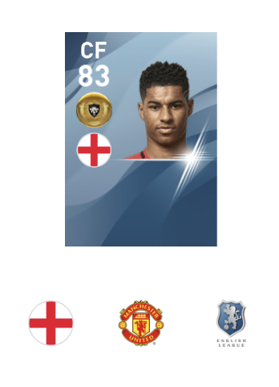

銀玉俊足ラインブレイカーのムサ・コナテ！サイドのポジションでも使える！
7/1 2020
カテゴリー:銀玉,FW
ついに2人目の紹介です！もうウイイレ2020終盤なのに選手紹介ってなんかおかしいですね... これからもよろしくお願いします。
基本情報
| 能力 | レベルMAX |
|---|---|
| 総合値 | 86 |
| オフェンスセンス | /87 |
| ボールコントロール | 79 |
| ドリブル | 80 |
| ボールキープ | 77 |
| グラウンダーパス | 76 |
| フライパス | 68 |
| 決定力 | 87 |
| ヘディング | 79 |
| プレースキック | 67 |
| カーブ | 69 |
| スピード | 96 |
| 瞬発力 | 91 |
| キック力 | 80 |
| ジャンプ | 88 |
| フィジカルコンタクト | 76 |
| ボディコントロール | 82 |
| スタミナ | 76 |
| ディフェンスセンス | 56 |
| ボール奪取 | 53 |
| アグレッシブネス | 63 |
| GKセンス | 40 |
| キャッチング | 40 |
| クリアリング | 40 |
| コラプシング | 40 |
| ディフレクティング | 40 |
| 逆足頻度 | 2 |
| 逆足制度 | 3 |
| コンディション安定度 | 5 |
| 怪我耐性 | 2 |
スキル
アクロバティックシュート
ワンタッチシュート
選手長所
ドリブル突破
プレースタイル
ラインブレイカー
評価
- スピード96の足の速いラインブレイカー
- 銀玉としては高水準なオフェンス能力に加え、ワンタッチシュート持ち
- コン安5で少し心配
- カーブは残念
有名選手と比較
左がムサ・コナテ、右がラッシュフォード
| 能力 |  | ||
|---|---|---|---|
| 総合値 | 86 | 92 | |
| オフェセン | 87 | 88 | |
| ボルコン | 79 | 89 | |
| ドリブル | 80 | 90 | |
| ボールキープ | 77 | 93 | |
| グラパス | 76 | 81 | |
| フライパス | 68 | 78 | |
| 決定力 | 87 | 87 | |
| ヘディング | 79 | 76 | |
| プレースキ | 67 | 82 | |
| カーブ | 69 | 84 | |
| スピード | 96 | 99 | |
| 瞬発力 | 91 | 95 | |
| キック力 | 80 | 92 | |
| ジャンプ | 88 | 75 | |
| フィジコン | 76 | 80 | |
| ボディコン | 82 | 82 | |
| スタミナ | 76 | 90 | |
| ディフェセン | 56 | 64 | |
| ボール奪取 | 53 | 59 | |
| アグネス | 63 | 77 | |
| GKセンス | 40 | 40 | |
| キャッチング | 40 | 40 | |
| クリアリング | 40 | 40 | |
| コラプシング | 40 | 40 | |
| ディフレク | 40 | 40 | |
| 逆足頻度 | 2 | 2 | |
| 逆足精度 | 3 | 2 | |
| コン安 | 5 | 5 | |
| 怪我耐性 | 2 | 2 |
確定スカウト
- アミアン + セネガル
- アミアン + アフリカ + オフェンスセンス or CF
※アップデートにより変更される場合があります